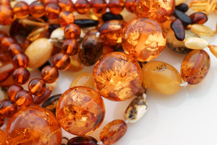

How Do Amber Teething Necklaces Work?
Teething necklaces have been used by parents for centuries, especially in the Baltic region of Europe from which the most effective form of the resin originates. While these parents may not have known how or why these baubles helped to relieve the pain, drooling, inflammation and irritability that their children experienced as new teeth broke through the surface of the gums, they did realize that the treatment was effective. Modern parents who hope to alleviate these difficult symptoms for their own children without resorting to over-the-counter topical analgesic gels filled with synthetic chemicals are helping amber teething necklaces to enjoy a resurgence in popularity. Thanks to today's scientific advances, however, it is possible to understand exactly how and why a teething necklace made from amber can make the process of teething easier for your child.
Amber in Medicinal History
Amber has been used in a variety of forms as a medicinal treatment for centuries. Amber oil, amber powder tinctures and also amber jewelry are listed in the medicine lists of many ancient societies. Today you will find amber teething necklaces in many European pharmacies today, since doctors have long been aware of their ability to bring relief to the symptoms of teething.
Succinic Acid
Contrary to popular belief, amber is not a stone. It's a natural resin that has been fossilized, retaining many of its original chemical compounds. While there are a variety of imitation amber beads commercially available, only true amber contains succinic acid, an all-natural anti-inflammatory with antibiotic and pain-relieving properties. Of all the varieties of authentic amber, that which comes from the Baltic region of Europe contains the highest concentration of succinic acid, 3 – 8%. Succinic acid is a powerful antioxidant. It helps fight toxic free radicals, helps improve the immune system, and reduces stress. Succinic acid from other natural sources is also used in many different pharmaceutical and herbal medicines today.
Direct Contact Between a Teething Necklace and Baby's Skin
In order for your baby to absorb the succinic acid contained within natural Baltic amber, the beads should have direct contact with his skin. The compound is absorbed through skin contact, and circulates through the body to provide a safe alternative to commercially available numbing gels. The highest content of the acid is found in the amber cortex–the external layer of the stone. For that reason, raw amber that has NOT been highly polished is recommended to achieve the highest benefit. Full skin contact provides the most effective level of succinic acid to combat teething symptoms. The necklace should be short enough that the beads don't fall over the collar of a shirt, but remains next to the skin.
Body Heat
When a teething necklace made of authentic Baltic amber lies against your baby's skin, his body heat will warm the fossilized resin and allow the release of naturally-occurring succinic acid. When contact between the teething necklace and skin is maintained, succinic acid is absorbed and the healing, pain-relieving properties begin to take effect.
Anxiety Reduction
When a baby is in pain, anxiety and stress are very natural and normal reactions. This anxiety often results in the irritability and crying that parents of teething babies are all too familiar with. A 2003 study by the Department of Pharmacology and Shenyang Pharmaceutical University in China showed a correlation between the introduction of succinic acid and the reduction of temperature-induced stress in laboratory mice. The same study also showed that succinic acid had a very slight sedative effect, meaning that the introduction of succinic acid into your baby's bloodstream through his teething necklace will not only relieve his physical discomfort, but that of the emotional sort as well.
In order to ensure that your baby's teething necklace proves to be an effective remedy for symptoms associated with teething, it's important to purchase it from a reputable dealer. Imitation beads made of glass or plastics will have no analgesic effect, nor will those crafted from the immature copal resin amber-lookalike. Purchasing authentic Baltic amber and maintaining direct contact between the necklace and your baby's skin is the best way to reap all the benefits of this safe, all-natural pain-reliving alternative.